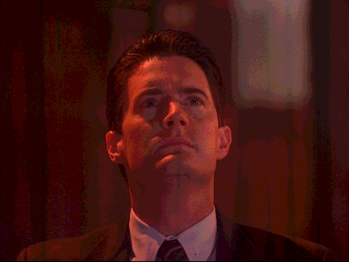

Twin Peaks, kolmas kausi
Uutta Twin Peaksia saamme odottaa vielä jokusen aikaa, mutta aika hyvältä se tuntuu: luotan siihen, mitä Lynchiltä on tulossa. En haluaisi hypettää mitään kaukana tulevaisuudessa julkistettavista projekteista, mutta olen aika luottavainen syntyvään laatuun, pienin huolin.
Tulossa paljon tavaraa
Sarja on kuvattu (vai edelleen kuvauksessa?) siten, että kokonaisuus kuvataan kuin yhtenä pitkänä elokuvana kohtauksineen, ja tämä sitten pätkitään moderniin TV:hen sopivaksi materiaaliksi, jota on tulossa puheiden mukaan 18 jaksoa. Otaksun, että tämä tarkoittaa jopa kahta uutta kautta, jonka jaksot ovat 50-55-minuuttisia.
Järjestely taitaa toimia Lynchillekin aika hyvin, koska perinteisesti mies on ohjannut valtavat määrät ylimääräistä roinaa kuhunkin projektiinsa, ja sydänverta vuodattaen on tarvittu pätkiä hyvää tavaraa leikkauspöydän lattialle. Esimerkiksi Dyynin teatteriversio on ohjaajan näkemykseen verrattuna aivan kamala raiskaus, ja myös FWWM olisi kaivannut joitakin poistetuista kohtauksista säilyttääkseen eheämmän narratiivin.
Kirsikkapiirakat ja pöllöt
Twin Peaksissa yhdistyy jäljittelemätön yhdistelmä niinsanottua kirsikkapiirakka-twinpeaksia ja pöllöjä. Meillä on pehmeitä höttöjä kirsikkapiiraiden muodossa: meillä on Dale Cooper omituisuuksineen, on hölmöä Andya ja Lucya, meillä on Tri Jacoby ja meillä on teiniromansseja. Meillä on siis lämmintä menoa ja pahuksen hyvää kahvia ja kirsikkapiirakkaa ja tiibetin oppeja. Mutta meillä on myös metsän pimeyttä, Leo Johnsonia ennen hänen uusia kenkiä, BOBia ja Mikeä ja Windom Earlea. Metsässä elää joku pahuus, ja sen symboloivat pöllöt.
Me kaikki muistamme ja rakastamme ensimmäisten 15 jakson visuaalisen, auraalisen ja tunnelmallisen ilmapiirin vaikutuksen kokemukseen. Kun kaikki tämä sarjan ensimmäisen puolivälin kertymä kulminoituu 15. jaksossa, (Lonely Souls) Julee Cruise ja jättiläinen ja pöllöt ovat vauhdissa, ja kaikki toistuu uudelleen, minulle nyt herää huoli, että voiko tai haluaako Lynch yhdistää kirsikkapiirakat ja pöllöt vuosia myöhemmin edelleen samalla kaavalla? Vai onko tuleva TP3 synkempää tavaraa, kuten ovat likipitäen kaikki Lynchin työt Twin Peaksin jälkeen olleet.

Twin Peaks purkitettiin 1991 ja sen jälkeen on Lynch erikoistunut tekemään vain mustempia töitä. FWWM, Lost Highway, Mulholland Dr. ja Inland Empire kaikki ovat melkoisia synkfestejä. Onko syytä pelätä, että uusi TP3 on modernia TV:tä kuten True Detective ilman kirsikkapiiraita ja pahuksen hyvää kahvia? Lynchin työt ennen TP:tä olivat paljon vaihtelevampia ja esimerkiksi Elefanttimies ja Dyyni molemmat olivat ohjaajan rajojensa ja mieltymystensä kokeiluja. Blue Velvet sisältää lämpimiä hetkiä ja onkin monien mielestä hyvä esiaste TP:lle analogisine miljöineen ja kaikkineen.
Se on yksi minun huolistani. Onneksi en ole huolissani monesta muusta asiasta, vaikka ehkä minun pitäisi jotenkin hillitä itseaiheutettua hypeäni.
Ilon aiheet
Lynch lupaa ohjata kaikki jaksot, jolloin esimerkiksi TP:n jälkimmäisellä puoliskolla tapahtunut kerronnan vajoaminen hankiin puutteellisemman luovan ohjauksen takia (Lynch ja Frost molemmat alkoivat viettää liikaa aikaa muissa projekteissa kun ABC:n johto ensin aiheutti sarjan vesittämisen vaatimalla tappajan selvittämisen kakkoskauden puolivälissä) voisi jäädä kokonaan aiheettomaksi peloksi. Lynch/Frost toimii koko tiiviin projektin ajan yhdessä ja tiiviin aikataulun nimissä myös laatu ja luova henki toivottavasti säilyy.
Vaikka ensihuhujen jälkeen selvisikin, että sarja kuvataan digitaalisesti filmin sijaan, on Lynchin suorittama kaikkien jaksojen ohjaus käsittämättömän väkevä uutinen ja sulaa hunajaa: olivathan kaikki Lynchin ohjaamat TP-jaksot sitä kultaisinta laatua silloin 25 vuotta sitten.
Sivuvaikutuksena Lynchin pitämä ohjaustauko saattaa TP3:n myötä ratketa, ja uusia elokuvaprojekteja on ehkä varovaisesti toivottavissa tuleville vuosille. Tämä jos mikä on tervetullut ajatus, eikä edes kamalan epärealistinen. Tämä on nyt tätä minun itseaiheutettua hypeä.
Menetyksiä ja uusia lupauksia
Onneksi valtava joukko vanhoja nimiä haluaa olla mukana kenties vuosikymmenen uudelleenlämmittelyssä. Vahvistamattomien lista on liian suuri, joten en nyt rupea luettelemaan kaikkia. Kuitenkin hyvää tekee nähdä kaikkia osallisia 25 vuotta myöhempään: on kuin kaikki olisi, kuten kuuluukin. Uusi sarja ei varmasti saisi niin vauhdikkaasti asioita käyntiin, jos kaikki pikkukaupungin väki pitäisi esitellä alusta alkaen. Toivon vain, että Lynch päättää luoda TP3:n nojaamaan esitietämykseen.
Angelo Badalamentilla on liian suuri osa olla erossa huipputason tunnelmanluonnista, ja onneksi hän onkin luvannut osallistua projektiin. Sääli on, että kaikki alkuperäiset TP-ihmiset eivät joko ehdi, halua tai kykene osallistumaan uuteen Twin Peaksiin, mutta tuttuja nimiä on ilahduttava määrä. Tällä hetkellä Michael Ontkeanin osallisuus on auki. Ja valitettavan moni nimi on ehtinyt kuollakin 25 vuoden aikana. Näihin kuuluvat mieleenpainuvat TV-kasvot saanut Frank Silva, mutta myös vahvat tukihahmot: Jack Nance, Catherine E. Coulson ja Don S. Davis.
Uudet vahvistukset luovat kuitenkin kovasti toivoa: Amanda Seyfried ja Balthazar Getty (Lost Highway!) eivät voi kamalan huonosti suorittaa sen tietämyksen valossa, mitä minulla on näistä hienoista ihmisistä. Huhut Robert Forsterin vierailuista voisivat pitää paikkansa, ja tämä olisi entistä hienompaa. Sääli, että Lynchin kaveri Robert Loggia ei ehtinyt projektiin mukaan.